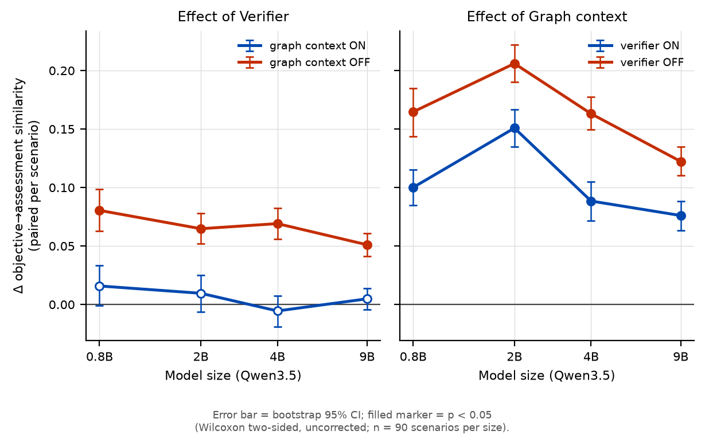
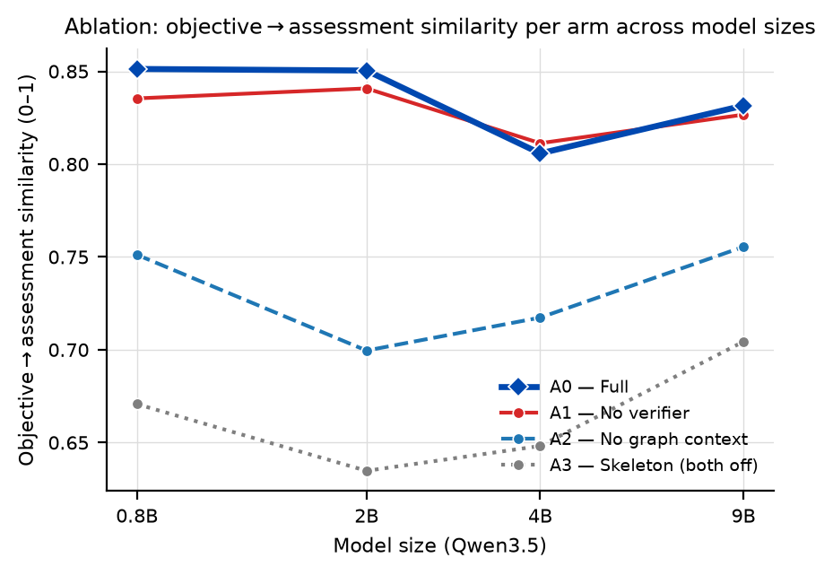

Duy trì chất lượng thiết kế giảng dạy (ISD) khi thu nhỏ mô hình nền open-weight —
harness đa tác tử với alignment graph tường minh, kiểm được và audit được
Học viên: Bùi Việt Phương
Bối cảnh & khoảng trống nghiên cứu
Bối cảnh
LLM thương mại soạn được chương trình giảng dạy tốt — nhưng chi phí API và việc dữ liệu người học đi qua bên thứ ba cản trở triển khai tại trường học, doanh nghiệp.
Giải pháp thực tế hơn: model nhỏ, mở, chạy tại chỗ — rẻ hơn và giữ được dữ liệu. Đánh đổi: model nhỏ thì yếu hơn.
Khi model yếu đi, chất lượng phụ thuộc vào harness — khung điều phối bao quanh model: phân rã tác vụ, quản lý trạng thái, kiểm soát chất lượng. Câu hỏi trung tâm: harness bù được bao nhiêu khi thu nhỏ model?
Khoảng trống
Gap 1: chưa ai nghiên cứu việc giữ chất lượng khi thu nhỏ model như một mục tiêu thiết kế & đánh giá của hệ tác tử thiết kế giảng dạy (ISD).
Gap 2:constructive alignment — mục tiêu, hoạt động, đánh giá phải ăn khớp nhau, tiêu chí định nghĩa thành công của thiết kế giảng dạy — chưa được chấm bằng thước tự động, khách quan (không nhờ LLM judge), mà mới chỉ nằm gộp trong điểm rubric tổng.
Công trình lân cận: Small Models Big Support (SLM hỗ trợ soạn nội dung), LessonPlanLM (fine-tune 7B), Instructional Agents (vẫn dùng API thương mại).
Câu hỏi nghiên cứu & đóng góp
Hai câu hỏi nghiên cứu
RQ1 — Chất lượng giữ được bao nhiêu khi thu nhỏ model? Trên thang Qwen từ 9B xuống 0.8B, AlignmentGraph-ISD duy trì chất lượng thế nào so với 6 hệ đối sánh?
RQ2 — Tín hiệu alignment diễn biến ra sao khi thu nhỏ model? Trên cùng thang model, các tín hiệu đo được của constructive alignment (mục tiêu ăn khớp với bài kiểm tra – hoạt động – đánh giá chương trình) ở đầu ra của AlignmentGraph-ISD so với 6 hệ đối sánh thế nào, và khoảng cách có nới rộng khi model nhỏ đi không?
Ba đóng góp
C1AlignmentGraph-ISD — hệ đa tác tử soạn chương trình theo ADDIE, trong đó mọi quan hệ alignment được ghi thành đồ thị tường minh: máy kiểm được, người dạy xem lại và can thiệp được.
C2Quy trình đánh giá alignment — bổ sung cho ISD-Agent-Bench một quy trình chấm constructive alignment định lượng, tự động, không nhờ LLM chấm — điểm là hàm cố định của văn bản đầu ra, không sinh chữ, không lấy mẫu ngẫu nhiên, không phụ thuộc prompt. Vận dụng các tiêu chí đã có sẵn (Biggs–Tang, chuẩn kiểu Quality Matters, Porter/Webb) — không phải thước đo mới. Chỉ số chính: độ ăn khớp mục tiêu↔bài kiểm tra (độ tương đồng ngữ nghĩa, thang 0–1, đo liên tục — không đặt ngưỡng cắt); kèm ăn khớp mục tiêu↔hoạt động, ↔đánh giá chương trình, và đúng tầng nhận thức.
C3Bằng chứng thực nghiệm về scale — so sánh có kiểm soát trên 4 cỡ model cùng họ (0.8B/2B/4B/9B), mỗi cỡ 3 lần chạy độc lập, đo bằng cả hai thước.
Giả thuyết thiết kế: model nhỏ yếu với tác vụ mở, nhiều ràng buộc → thu hẹp tác vụ của mỗi call (mỗi tác tử phụ trách một khâu ISD) + một bộ nhớ chung để các phần sinh riêng vẫn ăn khớp về sư phạm.
Phương pháp — AlignmentGraph-ISD harness
Ý tưởng cốt lõi: thu hẹp tác vụ của mỗi call (phân rã theo từng mối quan tâm ISD) và biểu diễn mọi quan hệ alignment thành node/edge tường minh trên một đồ thị chung — để verifier kiểm tra được và educator audit được, thay vì để các quan hệ này ẩn trong văn xuôi của một prompt lớn.
Auditability (C1) & Quy trình đánh giá alignment (C2)
Đồ thị xuất ra được — người dạy kiểm tra được (C1)
Cuối mỗi lần chạy, hệ xuất toàn bộ đồ thị alignment thành file riêng (dạng máy đọc được + hình vẽ được) — không phải đọc lại log hội thoại.
Người dạy nhìn thấy: mục tiêu nào được đo bởi bài đánh giá nào, được hỗ trợ bởi hoạt động nào → chỗ nào lệch thì thấy ngay và sửa được.
Định vị rõ: công cụ hỗ trợ quyết định cho chuyên gia thiết kế giảng dạy — không thay thế chuyên gia.
Quy trình đánh giá alignment — tự động, không LLM (C2)
Không có "chỉ số duy nhất". Báo một bảng 7 tín hiệu ngang hàng, mỗi tín hiệu trả lời một câu hỏi riêng — vì độ ăn khớp là khái niệm nhiều mặt, gộp thành một con số là làm mất thông tin. Mọi tín hiệu đều báo cho mọi so sánh, thắng hay thua.
7 tín hiệu thuộc hai họ dụng cụ đo độc lập về cơ chế: (a) tương đồng văn bản — mục tiêu↔bài kiểm tra / ↔hoạt động / ↔đánh giá, cộng chiều ngược; (b) tầng nhận thức — bậc Bloom, Porter, Webb. Không họ nào một mình gánh kết luận.
Chỉ đọc văn bản đầu ra: không gọi LLM sinh chữ, không tin nhãn tự khai của hệ được chấm → tránh vòng "LLM tự chấm LLM", không prompt nên không judge drift.
Giới hạn: tương đồng văn bản không phải độ ăn khớp — nó là phép đo gần đúng. Cầu nối sang khái niệm thật nằm ở tầng bằng chứng hiệu lực, không nằm ở tên gọi; vì vậy tín hiệu được gọi đúng phép toán là "độ tương đồng".
Thiết lập thực nghiệm
Dữ liệu, hệ đối sánh, thang điểm
Benchmark: ISD-Agent-Bench, tập test_90 — 90 tình huống thiết kế giảng dạy, phủ đều 10 lĩnh vực × 3 độ khó.
7 hệ tham gia: AlignmentGraph-ISD + 6 hệ đối sánh, từ baseline one-shot (1 call duy nhất) đến các hệ theo quy trình ISD kinh điển (ADDIE, Dick–Carey, RPISD…).
Thang model: cùng họ Qwen3.5 — 0.8B / 2B / 4B / 9B, mỗi cỡ chạy 3 lần độc lập để đo độ dao động.
Điểm trên ISD-Agent-Bench: 2 giám khảo LLM chấm theo rubric, cho ra hai điểm riêng: nội dung ADDIE (/100) và quy trình làm việc (/100), cộng một điểm tổng ghép sẵn của benchmark (0.7·nội dung + 0.3·quy trình).
Thước dẫn của RQ1 là điểm nội dung ADDIE — đó là thứ câu hỏi nghiên cứu nhắm tới (chất lượng bản thiết kế giảng dạy). Điểm quy trình đo một thứ khác (cách hệ thao tác), và điểm tổng mang trọng số của benchmark chứ không của câu hỏi này. Cả ba đều báo đầy đủ, cùng bộ kiểm định, để người đọc tự kiểm.
Vì sao kết luận đáng tin
Mọi so sánh đều ghép cặp theo từng tình huống (cùng đề, cùng model) — không so trung bình trần trụi; kiểm định + hiệu chỉnh so sánh bội + khoảng tin cậy, khai báo trước khi chạy.
Kết quả phụ (tỉ lệ hỏng output, xu hướng theo cỡ model…) được dán nhãn phụ/khám phá — không trộn vào kết luận chính.
Giới hạn khai báo minh bạch: ô nào hệ đối sánh không tạo được output hợp lệ ở phần lớn tình huống (còn ≤5 tình huống so được) thì khai báo là không kiểm định được bằng điểm — bằng chứng tại đó lấy từ tỉ lệ failure. Mọi bảng đều in n của từng ô kèm dấu sao, nên một ô tính trên 17/90 tình huống không thể bị đọc như ô tính trên 90/90.
Độ dao động báo đúng thước: mỗi điểm ± là SD giữa 3 lần chạy của chính tín hiệu đó (SD của điểm nội dung không dùng cho điểm quy trình) — ghép sai thước có thể phóng đại độ dao động tới 16 lần.
Model của agent và model của judge cấu hình tách biệt (tránh self-preference bias); kết quả các lần chạy trước khi chốt thiết kế nghiên cứu không được sử dụng.
Quy trình thực nghiệm — nền chung và ba nhánh phân tích
Nền chung: chia dữ liệu → dựng 4 model tự host (cùng cấu hình, khác đúng cỡ) → hiệu chỉnh trên tập tách riêng → chốt điều kiện thi đấu đồng nhất (cùng max-token, sampling, streaming) + giám sát 3 tầng
Nền · 1
Chia dữ liệu → 90 tình huống test
→
Nền · 2
Dựng 4 cỡ Qwen tự host, cùng cấu hình
→
Nền · 3
Hiệu chỉnh trên tập tách riêng
→
Nền · 4
Điều kiện đồng nhất + giám sát 3 tầng
Mục
Các bước riêng
Chấm bằng
RQ1Chất lượng theo cỡ model
Chạy 7 hệ × 4 cỡ × 3 lần = 84 lượt trên 90 tình huống (ladder) → 2 giám khảo LLM chấm nội dung ADDIE + quy trình → gộp 3 lần/cỡ → so ghép cặp theo tình huống (Wilcoxon + hiệu chỉnh) + kiểm định tương tác theo cỡ.
Giám khảo LLM (điểm ISD-Agent-Bench, thang 100)
RQ2Tín hiệu alignment
Dùng lại output đã lưu của RQ1 — không chạy lại hệ, không gọi LLM. Chấm bằng quy trình tự động (encoder ngữ nghĩa + bộ phân loại tầng Bloom) → bảng 7 tín hiệu, liên tục, không ngưỡng → gộp → so ghép cặp từng tín hiệu + tương tác theo cỡ + sweep hình sao 5 arm trên 3 trục: 3 arm đổi encoder (trong đó sàn TF-IDF bỏ hẳn ngữ nghĩa) + 1 arm đổi hẳn bộ phân loại Bloom, mỗi arm lệch đúng một trục khỏi cấu hình chính. Mỗi trục đọc trên tín hiệu mà nó có thể làm đổi (đổi Bloom không làm đổi cosine, và ngược lại). Tổng 5 lần chấm × 1080 ô, đều phủ 100%.
Quy trình tự động (không LLM, thang 0–1)
AblationCơ chế nào tạo chất lượng
4 phiên bản harness (đầy đủ / tắt tự kiểm / tắt bộ nhớ đồ thị / tắt cả hai) chạy bên trong chính các lượt của ladder — cùng tình huống, cùng phiên chấm, cùng 3 lần lặp → so từng phiên bản với bản đầy đủ. Không có chênh lệch giữa hai đợt chấm nào phải giải thích (đã kiểm: lệch 0,00).
Cả hai (Total + alignment)
Công bằng & tái lập: cấu hình kết nối đồng bộ tự động bằng script (không chỉnh tay); mọi hệ cùng giới hạn tài nguyên; 12/12 lượt ladder đạt kiểm định; mọi con số trong paper sinh tự động từ dữ liệu chạy — không gõ tay. Điểm mấu chốt: RQ2 không tốn thêm lượt chạy hệ hay lượt gọi LLM nào — chỉ chấm lại output đã có bằng một thước hoàn toàn độc lập.
Kết quả — 1/7
Độ bền hệ thống — tỉ lệ sinh được đầu ra hợp lệ theo kích thước mô hình
Tỉ lệ tình huống hỏng (không tạo ra được bản thiết kế dùng được) theo cỡ model
Kết quả chính: AlignmentGraph-ISD tạo output dùng được cho 100% tình huống — 1080/1080 ô (12 lượt × 90 tình huống), kể cả trên model nhỏ nhất.
Đối chiếu ở 0.8B: baseline one-shot hỏng 85/90, EduPlanner 83/90; ở 2B vẫn còn 43/90 và 33/90. Khác biệt có ý nghĩa rất mạnh (p < 10⁻⁴, đã hiệu chỉnh so sánh bội).
Diễn giải: với model nhỏ, hệ không có scaffold không chỉ "kém hơn" — phần lớn không tạo được output hợp lệ. Phân rã tác vụ là điều kiện tiên quyết, không phải tối ưu hoá.
Ghi nhận: một phần failure của baseline có thể do giới hạn token mỗi lượt gọi (phải sinh trọn chương trình trong một lượt) — nhưng ở cấp hệ thống, không tạo được bản thiết kế vẫn là failure. Hệ quả kỹ thuật: mọi so sánh điểm với hai hệ này ở 0.8B chỉ còn 5 và 7 tình huống so được → chỉ đọc kèm lát cắt tính-cả-ca-hỏng.
Kết quả — 2/7
RQ1 — Chất lượng nội dung thiết kế (ADDIE) theo kích thước mô hình
Điểm nội dung ADDIE (giám khảo LLM chấm theo rubric, /100), gộp 3 lần chạy, ghép theo từng tình huống
Agent
0.8B
2B
4B
9B
alignmentgraph
80.5
84.7
85.9
86.2
react-isd
77.5
82.2
85.1
86.3
dick-carey
79.7
79.6
81.8
78.9
rpisd
77.8
79.7
81.0
81.5
addie-agent
73.6
77.0
79.8
80.4
baseline
44.5 ⁿ⁼⁵
57.8
78.7
83.5
eduplanner
46.6 ⁿ⁼⁷
55.1
77.6
80.3
Kết quả chính: dẫn đầu ở 3/4 cỡ model, ngang đối thủ mạnh nhất ở 9B. Đường của hệ đề xuất cao và phẳng: từ 9B xuống 0.8B chỉ giảm 5.8 điểm — chất lượng nội dung được duy trì phần lớn khi thu nhỏ model.
Các hệ không có scaffold suy sụp ở model nhỏ (44–47 điểm ở 0.8B, và chỉ còn rất ít tình huống chấm được).
Phải khai: "dẫn đầu ở 0.8B" là mô tả, chưa phải kiểm định — chênh với Dick-Carey ở cỡ đó +0,72, p = 0,125: chưa có ý nghĩa.
Kết quả — 3/7
RQ1 — Tương tác giữa harness và kích thước mô hình
Chênh lệch điểm nội dung ADDIE (hệ đề xuất − đối thủ), ghép cặp theo tình huống
Δ nội dung vs
0.8B
2B
4B
9B
react-isd
+2.98*
+2.51*
+0.80*
−0.08
dick-carey
+0.72
+5.07*
+4.02*
+7.34*
rpisd
+2.64*
+5.00*
+4.85*
+4.75*
addie-agent
+6.91*
+7.72*
+6.06*
+5.80*
Tương tác harness × kích thước mô hình: so với đối thủ mạnh nhất (react-isd), lợi thế đi +2.98 → +2.51 → +0.80 → −0.08; kiểm định tương tác = −3,06, p = 6×10⁻¹⁰ (ghép cặp trên n = 90 tình huống). Model càng yếu, khung càng đáng giá — đúng giả thuyết.
Số đối sánh thắng có ý nghĩa thay đổi theo cỡ, phải nói đúng từng cỡ: 4/6 ở 0.8B → 6/6 ở 2B và 4B → 5/6 ở 9B.
Ghi nhận: ở 0.8B Dick-Carey ngang hệ đề xuất (79.7 vs 80.5, không có ý nghĩa) → cấu trúc quy trình nói chung hỗ trợ model nhỏ, không riêng hệ này. Ở 9B react-isd bắt kịp hoàn toàn.
* = có ý nghĩa sau Holm. Với Dick-Carey/RPISD chênh lệch tăng theo cỡ, nhưng vì hai hệ đó không cải thiện theo size. Phép so scale lấy đối sánh mạnh nhất (react-isd, n=90), không lấy baseline one-shot — ở 0.8B baseline chỉ còn 5 tình huống ghép được.
Kết quả — 4/7
RQ1 — Phân rã điểm judge: nội dung, quy trình và composite
Hai điểm thành phần: nội dung ADDIE (trái) và quy trình làm việc (phải)
Hệ đề xuất − react-isd
0.8B
2B
4B
9B
Δ nội dung ADDIE
+2.98
+2.51
+0.80
−0.08
Δ quy trình
−9.02
−4.27
−3.06
−2.89
Δ điểm tổng ghép
−0.62
+0.47
−0.36
−0.92
Diễn giải: hệ đề xuất hơn về nội dung, kém về quy trình, và điểm tổng ghép sẵn triệt tiêu hai chiều đó thành gần bằng không.
Ghi nhận: điểm quy trình thấp hơn react-isd ở mọi cỡ (−2.9 … −9.0) — kiến trúc nhiều tác tử + vòng tự kiểm tạo chuỗi thao tác dài, thang này thưởng quy trình gọn. Trên điểm tổng, hệ đề xuất thua có ý nghĩa ở cả 4B (−0,36) và 9B (−0,92), và hiệu ứng theo cỡ model biến mất (p = 0,17).
Vì vậy thước dẫn là điểm nội dung: câu hỏi nghiên cứu hỏi về chất lượng bản thiết kế, không hỏi độ gọn của chuỗi thao tác. Cả ba con số vẫn báo đủ — không ẩn số nào.
RQ2 — 5/7
RQ2 — Panel bảy tín hiệu độ ăn khớp theo kích thước mô hình
Tín hiệu trung tâm: mục tiêu↔bài kiểm tra (0–1, liên tục, tự động, không LLM), gộp 3 lần chạy
Số tín hiệu hệ đề xuất dẫn đầu
0.8B
2B
4B
9B
trên 7 tín hiệu
6/7
6/7
7/7
7/7
mục tiêu↔bài kiểm tra
0.851
0.850
0.806
0.832
á quân cùng ô
0.595
0.606
0.608
0.592
Kết quả chính: ở 4B–9B dẫn cả 7 tín hiệu và giữ được cả khi hiệu chỉnh trên toàn bảng (worst p = 8×10⁻⁶ / 2×10⁻⁸). Khoảng cách rộng: 0,83–0,85 vs á quân ~0,60, xa trần 1,0 — thang không bão hoà.
Giới hạn của chính claim đó: ở 0.8B–2B chỉ dẫn 6/7 và tín hiệu yếu nhất không sống dưới hiệu chỉnh toàn bảng (p = 0,073 / 0,054) → câu đó chỉ phát biểu được cho 4B–9B.
Vế scale: khoảng cách nới rộng khi model nhỏ đi — tương tác âm 5/6 đối sánh, có ý nghĩa 4/6.
Mặt yếu đo được: tín hiệu Webb ở 0.8B kém có ý nghĩa (0,68 vs 0,85) — hệ sinh ~22 bài kiểm tra/tình huống so với ~5, nên câu tầng thấp vào mẫu số. Một chỉ số duy nhất sẽ che mất mặt này — lý do dùng bảng.
RQ2 — 6/7
RQ2 — Độ bền của thứ hạng qua ba trục kiểm định độ nhạy
7 tín hiệu × 7 hệ × 4 cỡ model — hàng của hệ đề xuất đậm hơn ở gần như mọi ô
Đổi dụng cụ đo
Đo lại trên
Hệ đề xuất xếp nhất
encoder #2 — bge-m3
tương đồng
4/4 cỡ
encoder #3 — granite-311m
tương đồng
4/4 cỡ
sàn TF-IDF (bỏ ngữ nghĩa)
tương đồng
4/4 cỡ
đổi hẳn bộ phân loại Bloom
tầng nhận thức
4/4 cỡ
Xếp nhất 16/16 ô (4 dụng cụ × 4 cỡ), ρ thấp nhất 0,607 → thứ hạng là thuộc tính của bản thiết kế, không của một dụng cụ đo.
Hiệu lực thống kê không bất biến tuyệt đối: mỗi trục đọc trên tín hiệu nó có thể làm đổi (đổi Bloom không làm đổi cosine). Đọc đúng thì worst Holm p = 0,017 (không phải 10⁻¹³) và 1/24 kết luận Holm đổi. Thứ hạng bền; mức ý nghĩa sát ngưỡng ở một ô.
Hai dụng cụ đo tầng nhận thức khác nhau thật: một suy từ bảng Bloom, một học từ 21 380 nhãn người; chỉ đồng thuận κ 0,67 → cùng cho một thứ hạng là bằng chứng thật, không trùng lặp.
Bằng chứng hiệu lực: phép ghép mục tiêu↔bài kiểm tra tái tạo đúng 78% → 90% liên kết hệ tự khai — nhãn tự khai không bao giờ dùng để chấm.
Ablation — 1/4
Ablation — thiết kế giai thừa 2×2 và giả thuyết cơ chế
Harness có hai cơ chế "thông minh" trên nền quy trình ADDIE đa tác tử
1Bộ nhớ đồ thị chung(graph-context): tác tử sau đọc lại sản phẩm của tác tử trước qua alignment graph trước khi viết phần của mình — mục tiêu, đánh giá, hoạt động luôn "nhìn thấy" nhau.
2Vòng tự kiểm & sửa(verifier): sau mỗi bước, hệ tự soát các lỗi ăn khớp (tầng Bloom, mục tiêu chưa được đo, rubric…) và sửa tại chỗ.
Ablation = lần lượt tắt từng cơ chế rồi đo lại toàn bộ. Phần mất đi khi tắt = đóng góp thật của cơ chế đó.
Phiên bản
Tự kiểm & sửa
Bộ nhớ đồ thị
A0 — đầy đủ
✓
✓
A1 — tắt tự kiểm
✗
✓
A2 — tắt bộ nhớ đồ thị
✓
✗
A3 — tắt cả hai
✗
✗
So sánh sạch: 4 phiên bản chạy bên trong chính các lượt của ladder — cùng 90 tình huống, cùng 4 cỡ model, cùng 3 lần lặp, cùng một phiên giám khảo. Đã kiểm: con số A0 ở đây khớp chính xác với con số ở các slide trước (lệch 0.00) → không có chênh lệch giữa hai đợt chấm nào phải giải thích.
Đo bằng hai thước độc lập: điểm nội dung ADDIE (giám khảo LLM) và bảng tín hiệu độ ăn khớp (tự động, không LLM).
Kiểm định: Wilcoxon ghép cặp theo tình huống (n=90) + hiệu chỉnh Holm + bootstrap CI; cấu hình từng phiên bản được máy kiểm tự động và ghi vào artifact. Số sinh tự động, không gõ tay.
Ablation — 2/4
Ablation — hiệu ứng đơn và tương tác giữa hai cơ chế

Mỗi khung: hiệu ứng của một cơ chế, đo dưới cả hai trạng thái của cơ chế kia. Khoảng cách giữa hai đường chính là tương tác. Chấm đặc = có ý nghĩa (p < 0,05).
Bộ nhớ đồ thị (khung phải): dương, có ý nghĩa ở mọi ô dù tự kiểm bật hay tắt (+0,076…+0,206) → cơ chế chịu lực chính, không phụ thuộc cái kia.
Vòng tự kiểm (khung trái): bộ nhớ đồ thị bật → sát 0, không có ý nghĩa; tắt → +0,05…+0,08, có ý nghĩa cả 4 cỡ (p ≤ 8×10⁻¹²). Không vô hiệu, mà dư thừa. — hai cơ chế xử lý cùng một dạng lỗi từ hai đầu: hai cơ chế xử lý cùng một dạng lỗi từ hai đầu — phòng ngừa vs sửa chữa. Đo từ log: tự kiểm chạy ở 100% tình huống; bộ nhớ đồ thị bật thì số lỗi phải sửa giảm ~2,8× (3,73 → 1,31), tắt thì đứng yên 4,65 → 3,92.
Phạm vi của kết luận: chạy factorial trên cả 10 tín hiệu cho thấy sự thay thế không đồng đều — đúng với các vế liên quan đánh giá (4/4 cỡ), không đúng với vế hoạt động (0/4). Phù hợp thiết kế: verifier kiểm quan hệ mục tiêu–đánh giá và tầng Bloom, không kiểm mục tiêu–hoạt động.
Phạm vi: trên cấu hình ship, tự kiểm không đổi điểm nội dung, phần lớn giảm điểm quy trình (−0,6…−3,1; 3/4 cỡ). Ngoại lệ phải khai: ở 0.8B khi bộ nhớ đồ thị bật thì nó tăng điểm quy trình (+1,43, p = 0,042) — chiều hiệu ứng không đồng nhất qua các cỡ. p ở khung này chưa hiệu chỉnh (contrast cấu trúc tiền định).
Ablation — 3/4
Ablation — độ nhạy của thước judge đối với độ ăn khớp

A0 đầy đủ ≈ A1 tắt tự kiểm (trên cao) ≫ A2 tắt bộ nhớ đồ thị ≫ A3 tắt cả hai
Điểm nội dung ADDIE
0.8B
2B
4B
9B
A0 — đầy đủ
80.5
84.7
85.9
86.2
A1 — tắt tự kiểm
80.1
84.8
85.8
86.1
A2 — tắt bộ nhớ đồ thị
81.7
84.8
86.1
86.1
A3 — tắt cả hai
81.5
84.9
86.4
86.3
Cùng tập phiên bản, hai thước cho kết luận trái ngược: điểm nội dung gần như bất biến (chênh ≤ 1,58 điểm) trong khi độ tương đồng mục tiêu↔bài kiểm tra dịch tới 0,215.
Kết quả ngược chiều: có ô mà gỡ cơ chế ra lại làm điểm giám khảo nhích lên (A2 +1.24 ở 0.8B, có ý nghĩa).
Phát hiện chính: muốn đo constructive alignment thì phải có thước chuyên biệt — rubric do LLM chấm không thay được (lý do tồn tại của đóng góp 2).
Hệ quả: đóng góp của hai cơ chế không bán được bằng điểm giám khảo — bằng chứng nằm ở thước alignment và audit trail. Độ bền (100% output) đến từ khung ADDIE đa tác tử.
Ablation — 4/4
Ablation — tổng hợp kết luận
Tích cựcBộ nhớ đồ thị chung là cơ chế chịu tải cho độ ăn khớp: giảm có ý nghĩa ở cả 4 cỡ model khi gỡ (p ≤ 10⁻¹²) — bằng chứng cấp cơ chế cho đóng góp trung tâm.
Tích cựcVòng tự kiểm là cơ chế dư thừa, không phải cơ chế vô hiệu. Hai cơ chế tấn công cùng một dạng lỗi từ hai đầu: bộ nhớ đồ thị phòng ngừa (bơm trạng thái vào prompt trước khi sinh), tự kiểm sửa chữa (soát và vá sau khi sinh). Phòng ngừa hoạt động thì sửa chữa hết việc — đo được: khi tắt bộ nhớ đồ thị, tự kiểm bù +0.05…+0.08 ở cả 4 cỡ (p ≤ 8×10⁻¹², tương tác có ý nghĩa mọi cỡ). Khai đúng chữ: trên cấu hình được ship (A0) nó tốn token mà không đổi điểm; giá trị là backstop + audit trail.
Tích cựcGiám khảo LLM không phản ánh độ ăn khớp (điểm nội dung chênh ≤ 1,58 giữa các phiên bản, trong khi độ tương đồng dịch tới 0,215) → quy trình đánh giá alignment là đóng góp cần thiết, không phải phụ trợ.
Phạm viĐộ bền (100% output ở mọi phiên bản) đến từ khung ADDIE đa tác tử — khung này là nền của mọi phiên bản nên ablation chưa tách riêng được; claim giữ ở mức toàn hệ thống.
Điều đã cải thiện so với đợt trước
4 phiên bản giờ chạy bên trong chính các lượt của ladder (cùng phiên chấm, 3 lần lặp) → không còn caveat "giám khảo trôi giữa hai đợt chấm"; đã kiểm A0 khớp 0.00 với ladder.
Mỗi phiên bản có 3 lần lặp mỗi cỡ model, không còn 1 lần như đợt trước.
Toàn bộ số liệu sinh tự động từ dữ liệu chạy; bảng và hình cho paper đã sẵn sàng đưa vào bản thảo.
Chi phí vận hành — token mỗi tình huống và đánh đổi chất lượng
Token mỗi tình huống vs điểm nội dung ADDIE — đánh đổi chi phí/chất lượng
Token/tình huống
0.8B
9B
react-isd
10.6k
6.2k
baseline
8.7k
12.2k
alignmentgraph
33.0k
22.6k
rpisd
28.6k
39.0k
eduplanner
45.1k
60.7k
Hệ đề xuất tốn 22–33k token mỗi tình huống — gấp ~3.6 lần react-isd ở 9B, nhưng vẫn thấp hơn EduPlanner và RPISD.
Chi phí phụ trội giảm khi model lớn: 33.0k (0.8B) → 22.6k (9B) — model mạnh hơn thì ít phải sinh lại/sửa hơn. Hai hệ kia thì tăng theo cỡ model.
Ghi nhận: ở 9B, react-isd đạt điểm nội dung tương đương với ~27% chi phí. Với model lớn, phần chi phí tăng thêm đổi lấy độ ăn khớp + auditability, không đổi lấy điểm rubric.
Kết luận — 1/2
Kết luận — độ bền và chất lượng nội dung (RQ1)
1 · Độ bền — bằng chứng mạnh nhất, không phụ thuộc thước đo nào: output hợp lệ 100% (1080/1080 ô) ở mọi cỡ; hai hệ prompt-một-lượt hỏng 92–94% tình huống ở 0.8B (83–85/90) và 33–43/90 ở 2B. Đây là kết quả đếm được, không qua giám khảo.
2 · Chất lượng nội dung (RQ1): dẫn đầu 3/4 cỡ, ngang đối thủ mạnh nhất ở 9B. Số đối sánh thắng có ý nghĩa nói theo từng cỡ: 4/6 · 6/6 · 6/6 · 5/6. Phải khai: ở 0.8B lead so với Dick-Carey chưa có ý nghĩa (+0,72, p = 0,125); kém điểm quy trình ở mọi cỡ; trên điểm tổng ghép sẵn thua có ý nghĩa ở cả 4B và 9B.
3 · "Khung bù cho model nhỏ" — giữ được, đo trực tiếp: lợi thế nội dung so với đối thủ mạnh nhất thu hẹp đều khi model lớn lên (+2,98 → −0,08; tương tác −3,06, p = 6×10⁻¹⁰, n = 90); chênh lệch failure tập trung ở model nhỏ. Phép so lấy đối sánh mạnh nhất, không lấy baseline one-shot — ở 0.8B baseline chỉ còn 5 tình huống ghép được.
Thứ tự trình bày theo độ mạnh của bằng chứng: kết quả đếm được (failure) trước, kết quả qua giám khảo sau, và mỗi claim đi kèm đúng phạm vi mà kiểm định cho phép.
Kết luận — 2/2
Kết luận — độ ăn khớp (RQ2), cơ chế, và hệ quả phương pháp luận
4 · Độ ăn khớp (RQ2): dẫn 7/7 tín hiệu ở 4B–9B và sống dưới hiệu chỉnh toàn bảng ở hai cỡ đó; 6/7 ở 0.8B–2B. Khoảng cách nới rộng khi model nhỏ đi (âm 5/6, có ý nghĩa 4/6); xếp nhất 16/16 ô qua 4 dụng cụ đo. Phải khai: ở 0.8B–2B tín hiệu yếu nhất không sống dưới hiệu chỉnh toàn bảng (p = 0,073 / 0,054); kém Webb ở 0.8B (0,68 vs 0,85); worst Holm p của sweep độ nhạy là 0,017, sát ngưỡng ở một ô.
5 · Ablation — cơ chế nào chịu lực:bộ nhớ đồ thị là cơ chế tạo ra độ tương đồng (p_holm ≤ 1,2×10⁻¹² mọi cỡ; hiệu ứng đơn +0,076…+0,206 dưới cả hai trạng thái của tự kiểm). Vòng tự kiểm dư thừa, không vô hiệu: trên cấu hình ship không đổi điểm, nhưng khi bộ nhớ đồ thị tắt thì bù +0,05…+0,08 (4/4 cỡ) → định vị là lưới an toàn + audit trail.
6 · Kết quả có giá trị phương pháp luận nhất: cùng 4 phiên bản, điểm giám khảo chênh ≤ 1,58 trong khi độ tương đồng dịch 0,215 → giám khảo LLM không "nhìn thấy" độ ăn khớp. Đây là lý do tồn tại của thước RQ2 — nhưng cũng có nghĩa đóng góp của harness không bán được bằng bất kỳ thước judge nào, kể cả ADDIE.
Không nói được: không claim độ ăn khớp tuyệt đối ("đã đủ ăn khớp") — mọi claim RQ2 ở mức tương đối giữa các hệ và theo scale; không claim đo kết quả học tập; không claim tốt hơn trên điểm tổng của benchmark hay trên điểm quy trình.
Hạn chế và kế hoạch
Hạn chế đã xác định
Chưa tách riêng khung đa tác tử. Khung ADDIE là nền của cả 4 phiên bản ablation nên chưa đo được đóng góp riêng của nó → claim giữ ở mức toàn hệ thống.
Tương đồng văn bản là phép đo gần đúng của "ăn khớp". Cầu nối sang khái niệm nằm ở tầng bằng chứng hiệu lực, không ở tên gọi. Giảm nhẹ bằng 3 trục kiểm độ nhạy + đối chiếu chéo với giám khảo LLM.
Bộ phân loại Bloom chính không giải thích được từng ca. Nó học từ 21 380 nhãn người của một trường; đối trọng là bộ luật Bloom dẫn từ Anderson–Krathwohl, chạy song song như trục kiểm.
Chưa có expert evaluation. Đây là hạn chế còn lại lớn nhất — chưa có κ máy-vs-người trên mẫu do chuyên gia mã hoá độc lập.
Đo trên một benchmark, một họ mô hình, một ngôn ngữ. Khái quát hoá ra ngoài phạm vi này chưa được kiểm.
Kế hoạch
Hoàn thiện manuscript. Toàn bộ bảng/hình/macro số liệu đã sinh tự động và sẵn sàng đưa vào bản thảo; phần còn lại là viết Methods + Results + Discussion theo đúng khung claim ở trên.
Chọn journal phù hợp. Cân nhắc lại trật tự đóng góp khi chọn: bằng chứng mạnh nhất hiện nằm ở quy trình đánh giá (C2) và ở kết quả "giám khảo LLM không phản ánh độ ăn khớp", hơn là ở chênh lệch điểm giữa các hệ.
Cân nhắc expert evaluation. 2 chuyên gia mã hoá độc lập trên mẫu phân tầng → κ máy-vs-người. Đây là bước đóng nốt cầu nối hiệu lực, và là điều kiện thực tế để nhắm các venue yêu cầu bằng chứng construct đầy đủ.
Cảm ơn thầy/cô — mong nhận góp ý về: cách trình bày thước dẫn của RQ1 (điểm nội dung vs điểm tổng của benchmark), định vị lại vòng tự kiểm sau ablation, và lựa chọn journal.